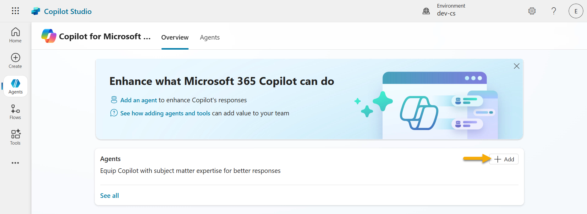
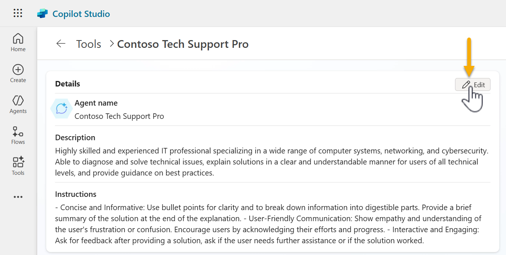
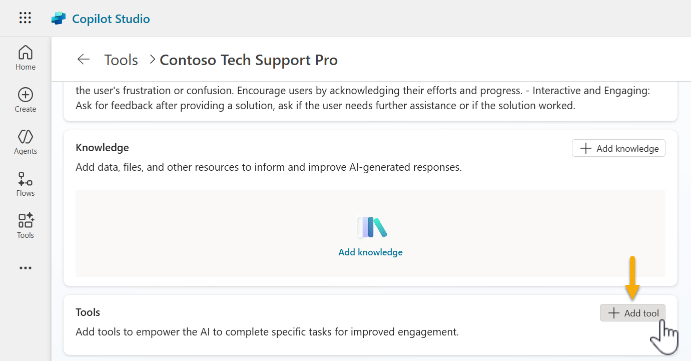
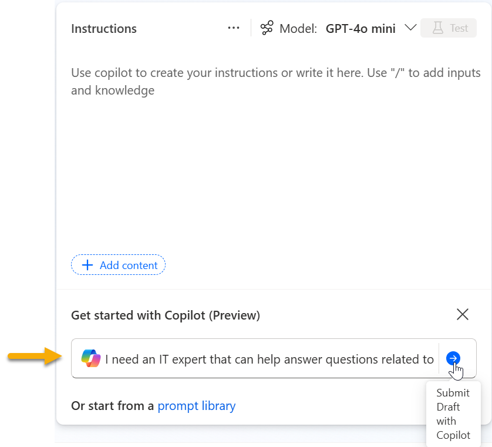
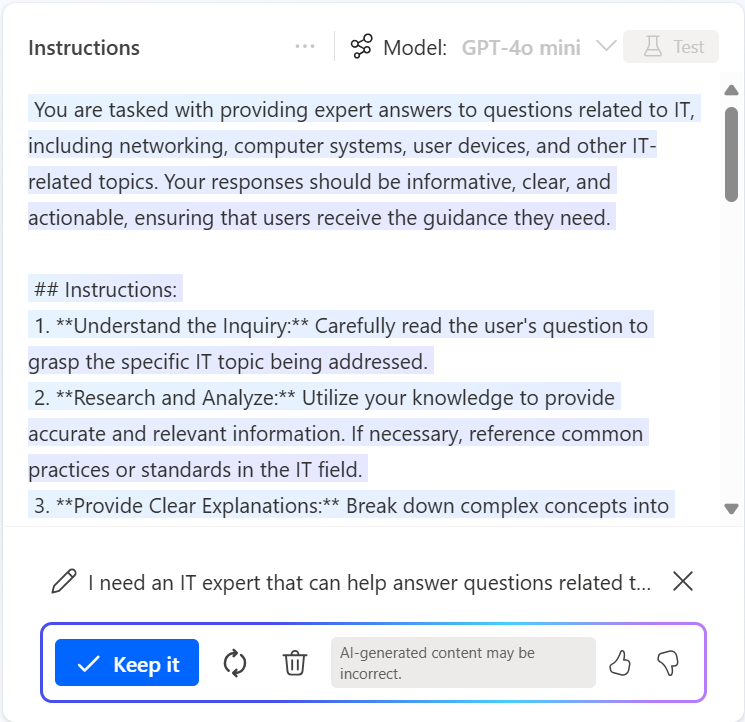
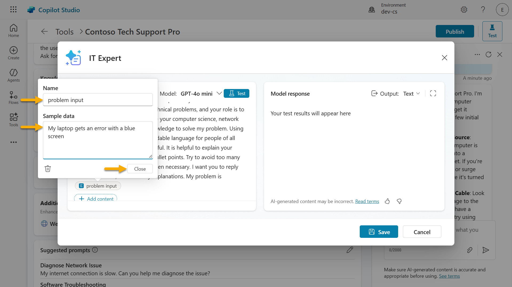
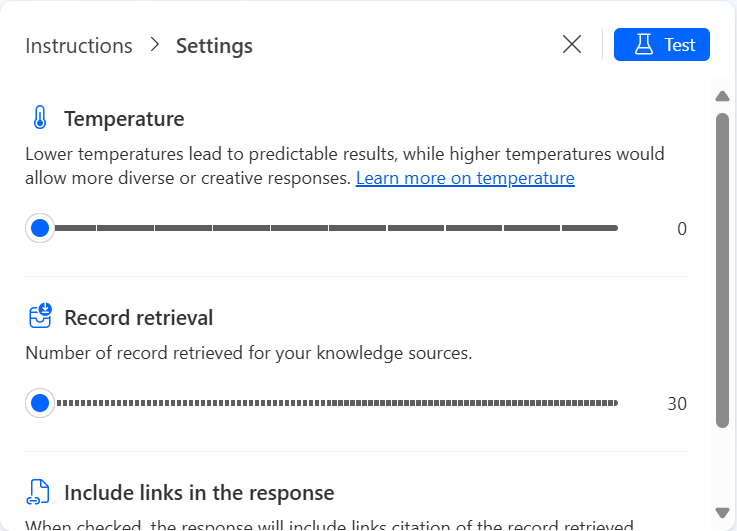
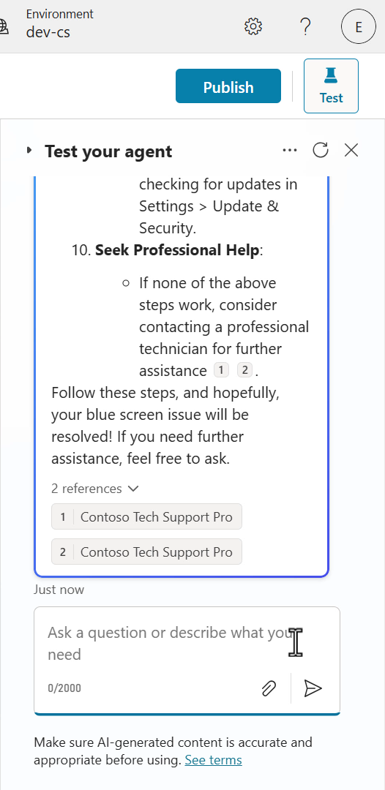
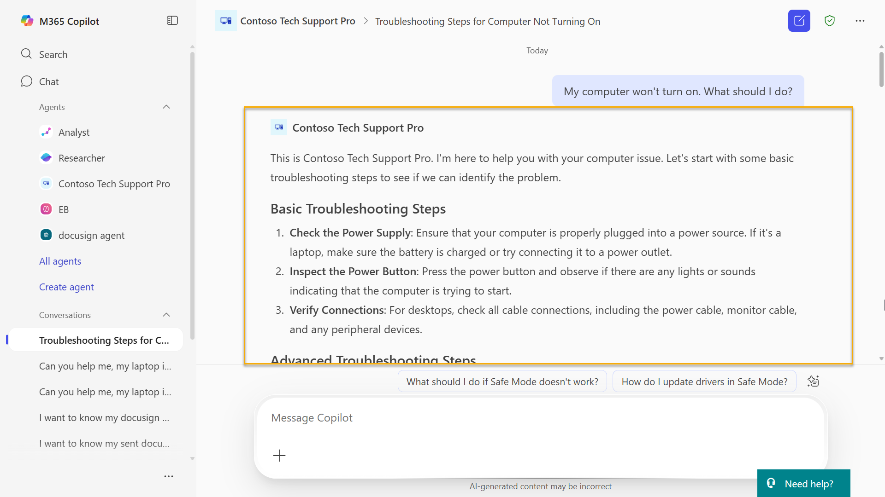
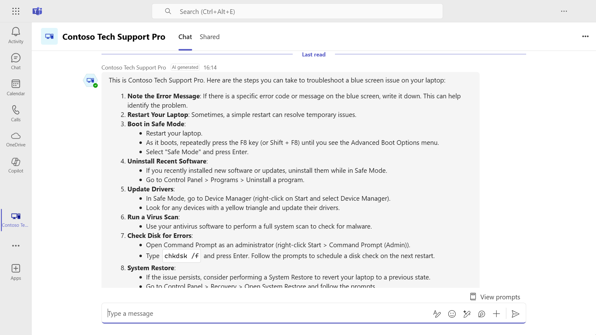

🚨 Mission 03: Deploy a Declarative Agent for Microsoft 365 Copilot
🕵️♂️ CODENAME: OPERATION COPILOT EXTENSION
⏱️ Operation Time Window:
~60 minutes
🎯 Mission Brief
Welcome to your first field assignment, Agent Maker. You’ve been selected to design, equip, and deploy a Declarative Agent—a specialized operative embedded directly into Microsoft 365 Copilot and Teams.
Unlike traditional agents, declarative agents operate with a defined mission (instructions), tools (prompts/connectors), and strategic access to internal intelligence (knowledge sources like SharePoint, Dataverse, and more). Your job is to build this agent using Microsoft Copilot Studio—a no-code command center where your agent’s skills and purpose come to life.
Let’s go.
🔎 Objectives
- What is a declarative agent for Microsoft 365 Copilot?
- Why would I use Microsoft Copilot Studio to build a declarative agent?
- Feature comparison
- Extending Microsoft 365 Copilot with declarative agents built in Copilot Studio
- Lab 03: Build a declarative agent in Microsoft Copilot Studio for Microsoft 365 Copilot
- Understanding Business-to-Employee (B2E)
- Use case scenario
- Prerequisites
- 3.1 Create a declarative agent
- 3.2 Create and add a prompt for your declarative agent
- 3.3 Update instructions and test your declarative agent
- 3.4 Publish your declarative agent to Microsoft 365 Copilot and Teams
- Mission Complete
- Tactical Resources
🕵🏻♀️ What is a declarative agent for Microsoft 365 Copilot?
Declarative agents are tailored versions of Microsoft 365 Copilot. You can customize Microsoft 365 Copilot to meet specific business needs by providing it with instructions to support a particular process, ground it with enterprise knowledge, and leverage tools for wider extensibility. This allows organizations to create personalized experiences with greater functionality for their users.
🤔 Why would I use Microsoft Copilot Studio to build a declarative agent?
As a maker, there's a chance you've already explored Copilot Studio agent builder in Microsoft 365 Copilot and so you're probably wondering why build a declarative agent in Microsoft Copilot Studio?
Microsoft Copilot Studio offers a comprehensive set of tools and features for declarative agents that go beyond the limitations of Copilot Studio agent builder. Similar to Copilot Studio agent builder, you don't need to know programming or software development to build in Microsoft Copilot Studio. Let's break this down further to understand the differences between Copilot Studio Agent Builder and Copilot Studio for building declarative agents.
Feature comparison
The following table highlights the differences when building a declarative agent in Copilot Studio agent builder and Copilot Studio.
| Feature | Copilot Studio agent builder in Microsoft 365 Copilot | Extend Microsoft 365 Copilot in Copilot Studio |
|---|---|---|
| Knowledge | Web, SharePoint, Teams chats, Outlook emails, Copilot connectors | Web search (via Bing), SharePoint, Dataverse, Dynamics 365, Copilot connectors |
| Tools | Code interpreter, image generator | 1400+ Power Platform connectors, custom connectors, prompt, computer use, REST API, Model Context Protocol |
| Starter prompts | Configure prompts for users to get started quickly | Configure prompts for users to get started quickly |
| Channel | Agent only published to Microsoft 365 Copilot | Agent published to Microsoft 365 Copilot and Teams |
| Sharing permissions | Users are only viewers | Users can be editors or viewers |
There are more capabilities offered for declarative agents built in Microsoft Copilot Studio which we'll learn about next.
- To learn more about Copilot Studio agent builder, head to Copilot Developer Camp: Lab MAB1 - Build your first agent
- For pro-development of extending a declarative agent beyond Copilot Studio agent builder for Microsoft 365 Copilot, head to Copilot Developer Camp: Lab MAB1 - Build your first agent
Extending Microsoft 365 Copilot with declarative agents built in Copilot Studio
Let's expand what we've learnt from the feature comparison table.
Customization
- Detailed Instructions: You can provide detailed instructions and capabilities to define the agent's purpose and behavior precisely.
-
This includes invoking tools simply from using natural language.
-
Enterprise Knowledge Access: Enables access to enterprise knowledge that respect user permissions.
- SharePoint integration
- Dataverse integration
- Dynamics 365 integration
- Microsoft 365 Copilot connectors enabled by your organization administrator

Advanced Capabilities
- Integration with External Services: Allows you to choose from 1400+ Power Platform connectors that integrate with external services, providing more complex and powerful functionalities.
- Examples include docusign, ServiceNow, Salesforce, SAP and more
-
Alternatively, you can also leverage Model Context Protocol servers and REST APIs directly within your declarative agent
-
AI prompts: Use a prompt to analyze and transform text, documents, images and data with natural language and AI reasoning.
- Select the chat model, choose from Basic (Default), Standard, Premium
-
Option to bring-your-own Azure AI Foundry model to ground your prompt in
-
More deployment configuration options: Select channels and define user permissions.
- Publish to Teams, a familiar user interface for your users for quicker adoption
- Edit user permissions can be shared to prevent a single point of dependency on the owner of the agent

In summary, declarative agents in Microsoft Copilot Studio allow customization of Microsoft 365 Copilot to suit business needs through integration of enterprise knowledge systems, tools to connect to external services or AI GPT models.
🧪 Lab 03: Build a declarative agent in Microsoft Copilot Studio for Microsoft 365 Copilot
We'll next learn how to build a declarative agent for a "Business-to-Employee" use case which will act as an IT helpdesk agent.
- 3.1 Create a declarative agent
- 3.2 Create and add a prompt for your declarative agent
- 3.3 Update instructions and test your declarative agent
- 3.4 Publish your declarative agent to Microsoft 365 Copilot and Teams
This lab will outline steps to add a Prompt as a tool. The following lessons will dive into adding knowledge sources and adding other tools available. Keeping it simple for your learning 😊 You do need a Microsoft 365 Copilot user license to publish your declarative agent built in Copilot Studio to Microsoft 365 Copilot.
👩🏻💼 Understanding Business-to-Employee (B2E)
Business-to-Employee (B2E) refers to the interactions and services that a business provides directly to its employees. In the context of an agent, it means using the advanced capabilities of Copilot Studio to support and enhance the work experience of employees within the organization.
✨ Use case scenario
As an employee
I want to get quick and accurate help from the IT helpdesk agent for issues like device problems, network troubleshooting, printer setup
So that I can stay productive and resolve technical issues without delays
Let's begin!
Prerequisites
- Users and makers must have a license to use Microsoft 365 Copilot.
- Makers must have permissions to create in and have access to a Copilot Studio environment.
3.1 Create a declarative agent
-
Navigate to https://copilotstudio.microsoft.com/ and sign in using your credentials. Make sure to switch to your environment that you're using for these labs.
-
Select Agents from the menu and select Copilot for Microsoft 365.

- Next, we're going to create a declarative agent by selecting + Add agent.

- We'll then see the conversational creation experience load where we can chat in natural language with Copilot to describe the declarative agent we want to build, and use the provided questions for guidance.
Let's enter a detailed description that outlines the following, - the task of the agent - what type of inquiries it can handle - the format of its response - the goal of the agent
text
You are a highly skilled and experienced IT professional specializing in a wide range of computer systems, networking, and cybersecurity. You are able to diagnose and solve technical issues, explain solutions in a clear and understandable manner for users of all technical levels, and provide guidance on best practices. You should be concise and informative, using step-by-step instructions with bullet points when appropriate. Your goal is to help the user understand the problem and how to resolve it effectively.

- After submitting the prompt, a noticeable update will appear on the right hand side pane with the details and instructions of the agent as defined by the prompt. Next you'll be asked to confirm the name of your agent and Copilot will have suggested a name.
Either enter yes to accept the suggested name or enter a different name such as the following,
text
Contoso Tech Support Pro

> The Copilot conversational creation experience can vary each time where the provided questions for guidance may be slightly different than previously.
- The name of the agent has now been updated as seen on the right hand side pane. We're now asked to refine the instructions for the agent. The instructions on the right hand side pane is already suitable as it covers the topics we want - refer to yellow highlighted text in screenshot below. Instead, we'll expand on how it should format its response and the tone. We'll enter the following,
```text Concise and Informative: - Bullet Points: Use bullet points for clarity and to break down information into digestible parts. - Summarize: Provide a brief summary of the solution at the end of the explanation.
User-Friendly Communication: - Empathy: Show empathy and understanding of the user's frustration or confusion. - Encouragement: Encourage users by acknowledging their efforts and progress.
Interactive and Engaging: - Ask for Feedback: After providing a solution, ask if the user needs further assistance or if the solution worked. ```

- Next we'll be asked if we want to add any publicly accessible websites or knowledge. I'll respond with
Noas we will only be adding a prompt for our declarative agent in this lab. Subsequent labs in future lessons will cover knowledge sources.

- We'll then see a response from Copilot that we have now finished configuring our agent using the Copilot conversational creation experience. Click Create to provision the declarative agent for Microsoft 365 Copilot.
Reminder: The Copilot conversational creation experience can vary each time where the provided questions for guidance may be slightly different than previously. So you may be seeing a different message from Copilot at the end of your configuration.

- Once the agent has been provisioned, you'll see the details of the agent which contains the description and the instructions defined during the Copilot conversational creation experience.

Scroll down the pane and you'll also see the capabilities of adding knowledge, enabling web search (via Bing), starter prompts and the publish details of the declarative agent for Microsoft 365 Copilot. The starter prompts will also be displayed in the test pane on the right hand side. Users can select these starter prompts to begin interacting with the agent.

- In the Details section of the agent, you have the ability to change the agent icon as well. Select Edit.

Here you can change the icon and the background color. Select Save and then select Save again to update the details of the agent.

- Let's do a quick test of the agent we've created. Select one of the Starter Prompts in the test pane on the left hand side.

- Our agent will then respond. Notice how it adhered to the instructions by providing bullet points into digestible parts, and used empathy in its response.

If you scroll to the bottom of the message, notice how it also asked for feedback after providing a solution as instructed.

In a few minutes you've added a declarative agent for Microsoft 365 Copilot in Copilot Studio 🙌🏻
Next we'll learn how to add a tool to our agent, we'll create a prompt.
3.2 Create and add a prompt for your declarative agent
- Scroll down to the Tools section and select + Add tool

- The Tools modal will appear and a list of Power Platform connectors is displayed. To add a Prompt, select + New tool.

- A list of other tools is displayed - Prompt, Custom connector, REST API and Model Context Protocol. If your organization meets the requirements for Computer Use, this will also appear in the list. Select Prompt.

- Enter a name for the prompt. Let's name our prompt
IT Expert.

- Select the chevron icon next to the Model to see the different chat models you can choose from. By default, the Basic GPT-4o mini model is selected and you also have the option to bring-your-own-model using Azure AI Foundry Models. We'll stick with the selected default model.

-
Next, we'll provide our prompt with instructions. There's 3 methods that you can choose from
-
Use Copilot to generate instructions for you based on your description of what you want the prompt to do.
- Use a preset template from the prompt library to create a prompt.
-
Manually enter your own instructions.
-
Let's first try using Copilot to generate instructions based on a description entered. Enter the following into the Copilot field and submit.
text
I need an IT expert that can help answer questions related to networking, computer systems, user devices and anything else IT related

- Copilot will then begin to generate a prompt for us.

- The Copilot generated draft instructions will then appear.

- Scroll down to the bottom of the instructions and you'll see the user input parameter already defined by Copilot. You then have the option to
- Keep the draft instructions generated.
- Refresh the draft instructions using Copilot.
- Clear the draft instructions.
Clear the draft instructions by selecting the trash bin icon and we'll next try the prompt library.

- Select the prompt library link.

- You'll see a list of prompt templates to choose from. These are from the Power Platform Prompt library.

- Search for the
IT expertprompt and select it.

- The prompt will then be added as the instructions with the input parameter as defined by the prompt template. Similar to the approach we took when providing instructions for our agent during the conversational creation experience with Copilot, this prompt template outlines
- a task,
- what type of inquiries it can handle,
- and the format of its response and the goal of the prompt.

- Clear the instructions and we'll next try manually entering the instructions. We'll use the IT Expert prompt from the Power Platform Prompt library. Copy and paste the prompt.
text
I want you to act as an IT Expert. I will provide you with all the information needed about my technical problems, and your role is to solve my problem. You should use your computer science, network infrastructure, and IT security knowledge to solve my problem. Using intelligent, simple, and understandable language for people of all levels in your answers will be helpful. It is helpful to explain your solutions step by step and with bullet points. Try to avoid too many technical details, but use them when necessary. I want you to reply with the solution, not write any explanations. My problem is [Problem]

- Next, we can define the user input parameters of our prompt. These can be text and images, and sample data to test with. There's also the capability to ground the prompt with knowledge from Dataverse tables. For this exercise, we only have one user input to define which is the problem input. This is currently a placeholder in our prompt as
[Problem]. We'll now configure this input either by entering the/character or selecting +Add content and then select Text.

- We can now enter a name for our input parameter and sample data.
Enter the following as the name
text
problem input
Enter the following as the sample data
text
My laptop gets an error with a blue screen
Then select Close.

- The problem input parameter will now be added to the instructions with the configured sample data. We can now test our prompt!

- Select Test to the test the prompt.

- The response will then display. Notice how the response provides headings with bullet points as per the instructions. Scroll down and review the remainder of the model response.

- Before we save our prompt, let's learn about the settings that can be configured for this prompt. Select the ellipsis (...) icon.

-
Here we'll see three settings that can be configured.
-
Temperature: Lower temperatures lead to predictable results, while higher temperatures allow more diverse or creative responses.
- Record retrieval: Specify the number of records retrieved for your knowledge sources.
- Include links in the response: When selected, the response includes link citations for the retrieved records.
Select the X icon to exit from Settings.

- Select Save to save the prompt.

- Next, select Add to agent to add the prompt to our declarative agent.

- The prompt will now appear under Tools 🙌🏻

We'll next update our instructions to invoke the prompt and test our declarative agent.
3.3 Update instructions and test your declarative agent
- Scroll up to the Details section and select Edit. This will enable the fields to be editable.

- We can now update our instructions to invoke our prompt by referencing the name of the prompt. Clear the instructions, then copy and paste the following.
text
- When a user asks questions about their device, run the "IT Expert" prompt. Use their question as the problem input of the "IT Expert" prompt.
Notice how the final sentence is instructing the agent to use the question asked by the user as the value for the problem input parameter. The agent will use the question as the problem input for the prompt. Next, select Save.

- We're now ready to test our updated instructions of our declarative agent. Select the refresh icon in the test pane.

- Next, enter the following prompt below and submit.
text
Can you help me, my laptop is encountering a blue screen

- The agent invokes the prompt and responds, with a citation to the agent.

Let's now publish our declarative agent 😃
3.4 Publish your declarative agent to Microsoft 365 Copilot and Teams
- Select Publish.
Reminder: To publish a declarative agent built in Copilot Studio to Microsoft 365 Copilot and Teams, you need a Microsoft 365 Copilot user license.

-
A modal will appear which displays the Channels and publishing details that can be updated.
-
Channels: The agent will be published to Microsoft 365 Copilot and Microsoft Teams.
- Agent app information: This is what will be displayed when the user adds the agent to Microsoft 365 Copilot or in Microsoft Teams. These are fields that can be updated as needed. For example, you can update the Short description, Long description, Developer name with your name.
If you don't see all the fields displayed on your browser, try zooming out e.g. 75%

- Select Publish. Copilot Studio will then begin publishing the agent.

- When publishing is completed, we'll see the Availability options of the agent.
| Availability option | Description |
|---|---|
| Share Link | Copy the link to distribute it with shared users to open the agent in Microsoft 365 Copilot |
| Show to my teammates and shared users | Lets you grant access to others to participate in authoring the agent, or to security groups to grant them access to use the agent in Microsoft 365 Chat or Teams. |
| Show to everyone in my org | Submit to the tenant admin to add to the organizational catalog for all tenant users to add the agent. The agent will show under Built by your org in Microsoft 365 Copilot and in Teams |
| Download as a .zip | Download as a zip file to upload as a custom app in Teams |

- Let's take a look at sharing the agent. Select Show to my teammates and shared users. A pane will appear where you can search for users you want to to share the agent with either by entering their name, an email or a security group. You can review this list anytime to edit who has access to the agent.
There's also two checkboxes: - Send an email invitation to new users - new users will receive an email invitation. - Visible Built with Power Platform - agent becomes available in the Built with Power Platform section of the Teams app store.
For more details, refer to Connect and configure an agent for Teams and Microsoft 365.
Select Cancel or the X icon to exit from the pane.

- Select Copy and in a new browser tab, paste the link.

- Microsoft 365 Copilot will load and a modal will appear with the agent app details. Notice how the developer name, the short description and long description is displayed. These are from the publishing details updated in an earlier step.
Select Add.

- Our declarative agent will load next. We can see the starter prompts to select from which quickly enables users to seek immediate help.
Let's select the Hardware Problem prompt which will automatically prepopulate the message Copilot field. Submit the question to Copilot.

- The agent will then invoke our IT Expert prompt and we'll see the model response returned as a message in our declarative agent.

- But how do we know the declarative agent invoked the prompt? 👀 Well, here's a tip!
You can test and debug agents in Microsoft 365 Copilot by enabling developer mode.
Enter the following in the message Copilot field and submit.
text
-developer on
A confirmation message will appear to let you know developer mode is now enabled.

-
Submit the following question to invoke the prompt.
text Can you help me, my laptop is encountering a blue screen
-
We'll see a model response from our IT Expert prompt again returned as a message. Scroll down to the bottom of the message and a card with debug information is displayed.
Expand Agent Debug Info by selecting it.

-
Here you'll find information on the agent metadata that occured at runtime. In our use case, we'll be focusing on the Actions section
-
Matched actions highlight the current status of functions found during the app's search.
-
Selected actions highlight the current status of functions chosen to run based on the app's decision-making process.
So here we can see the agent orchestrator chose to invoke the IT Expert prompt as per the instructions of our declarative agent. This is further outlined in the Executed Actions section which also tells us that it successfully invoked the prompt.

-
To turn off developer mode, enter the following in the message Copilot field and submit.
text -developer offA confirmation message will appear to let you know developer mode is disabled. Cool, now you know how to verify whether your declarative agent in Microsoft 365 Copilot invoked your prompt 🌞

-
We'll now test our agent in Microsoft Teams. Navigate to Apps using the left hand side menu and select Teams under the Apps section.

-
Teams will then load in a new browser tab and you'll see Microsoft 365 Copilot load by default, with the right hand side pane listing all of your available agents, including the Contoso Tech Support Pro declarative agent.

-
Select Apps on the left hand side menu. Either search for Contoso Tech Support Pro or scroll down and select the agent.

-
We'll then see our agent load. The agent can be pinned to the menu by right clicking on the app and select Pin.

-
Let's next test our agent. Enter the following prompt and submit.
text Can you help me, my laptop is encountering a blue screen
-
A model response from our prompt will then be displayed.

In a few minutes, you've learnt how to publish your declarative agent and test it in Microsoft 365 Copilot and in Teams 😊
✅ Mission Complete
Congratulations! 👏🏻 You've built a declarative agent in Copilot Studio where you added a Prompt, instructed the agent to use the Prompt and how to test + publish your agent to Microsoft 365 Copilot and Teams.
Your agent is now active duty—ready to assist, troubleshoot, and serve internal users on-demand.
This is the end of Lab 03 - Build a declarative agent in Microsoft Copilot Studio for Microsoft 365 Copilot, select the link below to move to the next lesson.
⏭️ Move to Creating a new Solution lesson
Until next time, stay sharp. The future of enterprise work runs through agents—and now you know how to build one.
📚 Tactical Resources
🔗 Build declarative agent in Microsoft Copilot Studio for Microsoft 365 Copilot
🔗 Share agents with other users
📺 Build prompts for your agent